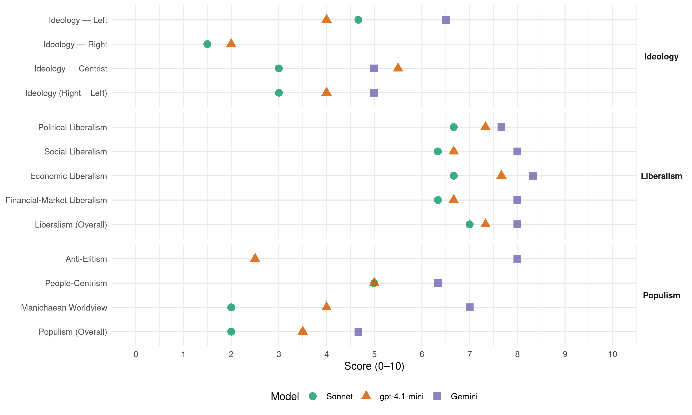

PJ (Argentina, 1995)
manifesto_id 150201_199505
Get full text: This site shows derived annotations and short verbatim quotes only. The full manifesto text is © Manifesto Project / WZB — obtain it via manifesto-project.wzb.eu using the manifesto_id above.
Headline scores
| Dimension | Sonnet | gpt-4.1-mini | Gemini |
|---|---|---|---|
| Populism (Overall) | 2.0 | 3.5 | 4.7 |
| Anti-Elitism | – | 2.5 | 8.0 |
| People-Centrism | 5.0 | 5.0 | 6.3 |
| Manichaean Worldview | 2.0 | 4.0 | 7.0 |
| Ideology (Right − Left) | 3.0 | 4.0 | 5.0 |
| Liberalism (Overall) | 7.0 | 7.3 | 8.0 |
| Political Liberalism | 6.7 | 7.3 | 7.7 |
| Social Liberalism | 6.3 | 6.7 | 8.0 |
| Economic Liberalism | 6.7 | 7.7 | 8.3 |
| Financial-Market Liberalism | 6.3 | 6.7 | 8.0 |
Evidence per dimension
Economic Liberalism
Gemini · score 8.0 · verified · chunk 1
“desregulación y apertura económica en los mercados”
funcionamiento de la economia popular de mercado, con desregulación y apertura económica en los mercados competitivos y regulación estatal
Gemini · score 8.0 · verified · chunk 2
“promover y desarrollar la actividad privada como motor”
la política está dirigida, principalmente, a promover y desarrollar la actividad privada como motor fundamental del crecimiento
Gemini · score 9.0 · verified · chunk 3
“politicas de desregulación y privatización”
Asistencia técnica y monitoreo a las provincias sobre politicas de desregulación y privatización en las provincias
gpt-4.1-mini · score 7.0 · verified · chunk 1
“desregulación y apertura económica en los mercados competitivos y regulación estatal en los mercados no competitivos”
…el mantenimiento del equilibrio fiscal y el funcionamiento de la economía popular de mercado, con desregulación y apertura económica en los mercados competitivos y regulación estatal en los mercados no competitivos…
gpt-4.1-mini · score 8.0 · verified · chunk 2
“promover y desarrollar la actividad privada como motor fundamental del crecimiento económico”
En los sectores de infraestructura económica y productivos, la política está dirigida, principalmente, a promover y desarrollar la actividad privada como motor fundamental del crecimiento económico, al logro de una participación más activa y de mayor volumen en los mercados internacionales
gpt-4.1-mini · score 8.0 · verified · chunk 3
“medidas de asistencia técnica y seguimiento a las provincias sobre politica de desregulación”
De acuerdo con el Pacto Federal, se implementarán medidas de asistencia técnica y seguimiento a las provincias sobre politica de desregulación en varias actividades: honorarios ejercicio de servicios profesionales, distribución mayorista y minorista, transporte de carga y pasajeros, actividades de puertos provinciales y mineria.
Sonnet · score 6.0 · verified · chunk 1
“desregulación y apertura económica en los mercados competitivos”
Consolidar la estabilidad mediante el cumplimiento estricto de la Ley de Convertibilidad, el mantenimiento del equilibrio fiscal y el funcionamiento de la economía popular de mercado, con desregulación y apertura económica en los mercados competitivos
Sonnet · score 7.0 · verified · chunk 2
“promover y desarrollar la actividad privada”
la política está dirigida, principalmente, a promover y desarrollar la actividad privada como motor fundamental del crecimiento económico, al logro de una participación más activa y de mayor volumen en los mercados internacionales
Sonnet · score 7.0 · verified · chunk 3
“politicas de desregulación”
Asistencia técnica y monitoreo a las provincias sobre politicas de desregulación. De acuerdo con el Pacto Federal, se implementarán medidas de asistencia técnica y seguimiento a las provincias sobre politica de desregulación
Financial-Market Liberalism
Gemini · score 8.0 · verified · chunk 1
“moneda fuerte y estable, apoyada en reservas”
derrotar al flagelo de la hiperinflación y poder tener otra vez economía, producción, inversión, ahorro y moneda fuerte y estable, apoyada en reservas genuinas depositadas en el Banco Central.
Gemini · score 8.0 · verified · chunk 2
“desarrollo del mercado inmobiliario a través de la titularización hipotecaria”
fideicomiso y el leasing que permite el desarrollo del mercado inmobiliario a través de la titularización hipotecaria, lo que cuenta
Gemini · score 8.0 · verified · chunk 3
“capitalización gestionado por el sector privado”
uno de reparto asistido a cargo del Estado nacional y otro de capitalización gestionado por el sector privado. Bajo este régimen
gpt-4.1-mini · score 7.0 · verified · chunk 1
“sistema financiero para restablecer la confianza en las instituciones bancarias aumentando sus índices de solvencia”
…dotar al sistema financiero de los instrumentos jurídicos y de ingeniería financiera necesarios para restablecer la confianza en las instituciones bancarias aumentando sus índices de solvencia, mediante su redimensionamiento y capitalización…
gpt-4.1-mini · score 7.0 · verified · chunk 2
“los bancos otorgarán créditos a los particulares para la compra de viviendas”
Con la titularización, los bancos otorgarán créditos a los particulares para la compra de viviendas, además del poder vender su cartera a Fondos Fiduciarios, Fondos Comunes de Inversión y la Banca Oficial, con los cuales, se “securitizarán” los créditos emitiendo titulos cuya garantia seran las escrituras hipotecarias.
gpt-4.1-mini · score 6.0 · verified · chunk 3
“apoyó a la Corte Suprema Nacional a implantar un sistema eficiente para la administración del poder judicial”
La Corte Suprema Nacional ha comenzado, con el apoyo financiero y técnico del Gobierno Nacional, a implantar un sistema eficiente para la administración del poder judicial, con el fin de que los jueces puedan dedicarse a su función principal que es impartir justicia.
Sonnet · score 6.0 · verified · chunk 1
“sistema de garantía de los depósitos destinado a preservar al pequeño inversor”
se ha diseñado un sistema de garantía de los depósitos destinado a preservar al pequeño inversor. No se ha reiterado en la conformación de dichas garantías, los errores del pasado
Sonnet · score 7.0 · verified · chunk 2
“titularización hipotecaria”
crear determinados institutos jurídicos como el fideicomiso y el leasing que permite el desarrollo del mercado inmobiliario a través de la titularización hipotecaria, lo que cuenta con tratamiento parlamentario
Sonnet · score 6.0 · verified · chunk 3
“capitalización gestionado por el sector privado”
uno de reparto asistido a cargo del Estado nacional y otro de capitalización gestionado por el sector privado. Bajo este régimen los trabajadores tienen la libertad de elegir quién administrará su porvenir
Political Liberalism
Gemini · score 8.0 · verified · chunk 1
“afianzar la independencia del Poder Judicial”
y otras medidas tendientes a afianzar la independencia del Poder Judicial. No nos detendremos en el analisis
Gemini · score 7.0 · verified · chunk 2
“una Justicia independiente y ágil”
En una República, Ias mayores garantias provienen de una Justicia independiente y ágil, pues una Justicia lenta
Gemini · score 8.0 · verified · chunk 3
“una Justicia independiente y ágil”
En una República, Ias mayores garantias provienen de una Justicia independiente y ágil, pues una Justicia lenta termina por ser injusta.
gpt-4.1-mini · score 8.0 · verified · chunk 1
“fortalecimiento del federalismo, descentralización, reconocimiento de los tratados internacionales de derechos humanos”
…han girado básicamente sobre las ideas-fuerzas de: fortalecimiento del federalismo, descentralización, reconocimiento de los tratados internacionales de derechos humanos y de integración con rango constitucional, establecimiento de nuevos derechos individuales y colectivos con sus respectivas garantías…
gpt-4.1-mini · score 7.0 · verified · chunk 2
“En democracia, el poder surge a partir de la voluntad ciudadana”
En democracia, el poder surge a partir de la voluntad ciudadana, a través de los mecanismos de consenso que tienden a su organización. El municipio es la primer; instancia en la articulación de los conflictivos intereses que sur en de la comunidad.
gpt-4.1-mini · score 7.0 · verified · chunk 3
“la libertad de prensa irrestricta”
En el campo de la cultura este gobierno se enorgullece de haber instaurado una libertad de prensa irrestricta y haber hecho realidad el compromiso de posibilitar medios de comunicación en manos de la sociedad, mediante la privatización de los que se encontraban en el ámbito del Estado Nacional…
Sonnet · score 7.0 · verified · chunk 1
“Proteger la vigencia del sistema democrático”
Proteger la vigencia del sistema democrático de toda amenaza interna o externa. Reestablecer el funcionamiento del aparato productivo, removiendo todos los obstáculos para la inversión
Sonnet · score 6.0 · verified · chunk 2
“En democracia, el poder surge a partir”
En democracia, el poder surge a partir de la voluntad ciudadana, a través de los mecanismos de consenso que tienden a su organización. El municipio es la primera instancia en la articulación de los conflictivos intereses.
Sonnet · score 7.0 · verified · chunk 3
“Justicia independiente y ágil”
En una República, las mayores garantías provienen de una Justicia independiente y ágil, pues una Justicia lenta termina por ser injusta
Liberalism (Overall)
Gemini · score 8.0 · verified · chunk 1
“desregulación y apertura económica en los mercados”
funcionamiento de la economia popular de mercado, con desregulación y apertura económica en los mercados competitivos y regulación estatal
Gemini · score 8.0 · verified · chunk 2
“promover y desarrollar la actividad privada como motor”
la política está dirigida, principalmente, a promover y desarrollar la actividad privada como motor fundamental del crecimiento
Gemini · score 8.0 · verified · chunk 3
“una Justicia independiente y ágil”
En una República, Ias mayores garantias provienen de una Justicia independiente y ágil, pues una Justicia lenta termina por ser injusta.
gpt-4.1-mini · score 8.0 · verified · chunk 1
“fortalecimiento del federalismo, descentralización, reconocimiento de los tratados internacionales de derechos humanos”
…han girado básicamente sobre las ideas-fuerzas de: fortalecimiento del federalismo, descentralización, reconocimiento de los tratados internacionales de derechos humanos y de integración con rango constitucional, establecimiento de nuevos derechos individuales y colectivos con sus respectivas garantías…
gpt-4.1-mini · score 7.0 · verified · chunk 2
“promover y desarrollar la actividad privada como motor fundamental del crecimiento económico”
En los sectores de infraestructura económica y productivos, la política está dirigida, principalmente, a promover y desarrollar la actividad privada como motor fundamental del crecimiento económico, al logro de una participación más activa y de mayor volumen en los mercados internacionales
gpt-4.1-mini · score 7.0 · verified · chunk 3
“la libertad de prensa irrestricta”
En el campo de la cultura este gobierno se enorgullece de haber instaurado una libertad de prensa irrestricta y haber hecho realidad el compromiso de posibilitar medios de comunicación en manos de la sociedad, mediante la privatización de los que se encontraban en el ámbito del Estado Nacional…
Sonnet · score 7.0 · verified · chunk 1
“convertibilidad, el equilibrio fiscal y el funcionamiento de la economía popular de mercado”
Consolidar la estabilidad mediante el cumplimiento estricto de la Ley de Convertibilidad, el mantenimiento del equilibrio fiscal y el funcionamiento de la economía popular de mercado
Sonnet · score 7.0 · verified · chunk 2
“promover y desarrollar la actividad privada”
la política está dirigida, principalmente, a promover y desarrollar la actividad privada como motor fundamental del crecimiento económico, al logro de una participación más activa y de mayor volumen en los mercados internacionales
Sonnet · score 7.0 · verified · chunk 3
“libertad de prensa irrestricta”
este gobierno se enorgullece de haber instaurado una libertad de prensa irrestricta y haber hecho realidad el compromiso de posibilitar medios de comunicación en manos de la sociedad
Anti-Elitism
Gemini · score 8.0 · verified · chunk 1
“destruido los nidos de víbora de la corrupción estructural”
derrotado a las máquinas de impedir, al miedo, a la desconfianza, a la desorganización y destruido los nidos de víbora de la corrupción estructural. Sostuvimos en la plataforma
gpt-4.1-mini · score 3.0 · verified · chunk 1
“destruido los nidos de víbora de la corrupción estructural”
…sin cálculos ni egoismos, habiendo derrotado a las máquinas de impedir, al miedo, a la desconfianza, a la desorganización y destruido los nidos de víbora de la corrupción estructural. Sostuvimos en la plataforma de 1989, como ahora, que la esperanza es la base…
gpt-4.1-mini · score 2.0 · verified · chunk 3
“el sentido de solidaridad del Justicialismo”
…que conduce el compañero Eduardo Duhalde. Asi, el sentido de solidaridad del Justicialismo hizo posible la actividad del Ente de Reparación Histórica del conurbano Bonaerense, que ha puesto en marcha mas de15.000 emprendimientos…
Sonnet · score 5.0 · mixed · chunk 1
“sectores de privilegio que han manejado la patria financiera”
concentrarlos como recursos políticos en manos de un Estado que prescindía de toda vinculación con la legitimidad popular, y en exclusivo beneficio de los sectores de privilegio que han manejado la patria financiera, la patria burocrática y la patria contratista
Sonnet · score 2.0 · mixed · chunk 2
“esquema ‘centralista’ burocratizó los proyectos”
El fracaso frecuente de los planes para las regiones no es solamente atribuible a la falta de recursos sino -generalmente- a su mala asignación. El esquema ‘centralista’ burocratizó los proyectos, invalidando los objetivos iniciales
Sonnet · score 3.0 · mixed · chunk 3
“quienes nos antecedieron, sólo atinaron a postergar”
el Sistema Previsional había virtualmente estallado con el drástico deterioro de las prestaciones. Quienes nos antecedieron, sólo atinaron a postergar el tratamiento de los problemas, apelando a medidas de emergencia
Ideology — Centrist
Gemini · score 5.0 · verified · chunk 3
“pensando en la gente”
al igual que la mayoría de los estados federales, pensando en la gente, para llevar adelante hasta su culminación
gpt-4.1-mini · score 7.0 · verified · chunk 1
“compromiso con el pueblo de instrumentación de un proyecto”
…para nosotros los justicialistas, no se trata sólo del cumplimiento de un recaudo formal sino de un compromiso con el pueblo de instrumentación de un proyecto de realizaciones elaborado a partir de los principios de nuestra doctrina…
gpt-4.1-mini · score 4.0 · verified · chunk 3
“un gobierno provincial que trabaja hermanado con la Nación”
…un gobierno provincial que trabaja hermanado con la Nación, al igual que la mayoría de los estados federales, pensando en la gente, para llevar adelante hasta su culminación el proyecto transformador del compañero Carlos S. Menem.
Sonnet · score 3.0 · verified · chunk 1
“unidad nacional susceptible de encarrilar a la República”
la idea de alcanzar un marco de unidad nacional susceptible de encarrilar a la República por los caminos de la paz y la concordia
Sonnet · score 3.0 · verified · chunk 2
“pensando en la gente, para llevar adelante”
trabajaja hermanado con la Nación, al igual que la mayoría de los estados federales, pensando en la gente, para llevar adelante hasta su culminación el proyecto transformador del compañero Carlos S. Menem.
Sonnet · score 3.0 · verified · chunk 3
“depositario de la soberanía popular”
en cabeza del Parlamento Nacional, depositario de la soberanía popular, la facultad de decidir en cada ejercicio presupuestario los recursos que la sociedad destine a los jubilados
Ideology — Left
Gemini · score 7.0 · verified · chunk 1
“poner el Capital al servicio de la economía”
la verdad y certeza de nuestros principios doctrinarios como condición para el desarrollo: “… poner el Capital al servicio de la economía y ésta al servicio del bienestar social.”
Gemini · score 6.0 · verified · chunk 2
“no se basaba en el capital, sino que se basaba en el trabajo”
el orden de la organización del Justicialismo no se basaba en el capital, sino que se basaba en el trabajo, porque el trabajo
gpt-4.1-mini · score 5.0 · verified · chunk 1
“relacionar el proceso de crecimiento con una más justa distribución del ingreso”
…Perfeccionar el funcionamiento de la gestión de Gobierno y la actividad de la Administración. Relacionar el proceso de crecimiento con una más justa distribución del ingreso. Reconocer a los trabajadores un rol protagónico en la concreción del proyecto…
gpt-4.1-mini · score 3.0 · verified · chunk 3
“la construcción de un orden social justo”
El Programa Social del Justicialismo, reafirma que la construcción de un orden social justo, con fin último de nuestra doctrina, constituye el polo orientador de las políticas públicas, donde hay una necesidad hay un derecho, dijo Eva Perón.
Sonnet · score 6.0 · verified · chunk 1
“poner el Capital al servicio de la economía”
confirmando la actual postura de los analistas internacionales, la verdad y certeza de nuestros principios doctrinarios como condición para el desarrollo: poner el Capital al servicio de la economía y ésta al servicio del bienestar social
Sonnet · score 4.0 · verified · chunk 2
“justicia social es uno de sus postulados madre”
En la Revolución Productiva, la justicia social es uno de sus postulados madre. En su dinámica esencialmente democrática no existirán trabajadores convertidos en convidados de piedra.
Sonnet · score 4.0 · verified · chunk 3
“construcción de un orden social justo”
El Programa Social del Justicialismo, reafirma que la construcción de un orden social justo, con fin último de nuestra doctrina, constituye el polo orientador de las políticas públicas
Ideology (Right − Left)
Gemini · score 7.0 · verified · chunk 1
“poner el Capital al servicio de la economía”
la verdad y certeza de nuestros principios doctrinarios como condición para el desarrollo: “… poner el Capital al servicio de la economía y ésta al servicio del bienestar social.”
Gemini · score 5.0 · verified · chunk 2
“no se basaba en el capital, sino que se basaba en el trabajo”
el orden de la organización del Justicialismo no se basaba en el capital, sino que se basaba en el trabajo, porque el trabajo
Gemini · score 3.0 · verified · chunk 3
“pensando en la gente”
al igual que la mayoría de los estados federales, pensando en la gente, para llevar adelante hasta su culminación
gpt-4.1-mini · score 5.0 · verified · chunk 1
“compromiso con el pueblo de instrumentación de un proyecto”
…para nosotros los justicialistas, no se trata sólo del cumplimiento de un recaudo formal sino de un compromiso con el pueblo de instrumentación de un proyecto de realizaciones elaborado a partir de los principios de nuestra doctrina…
gpt-4.1-mini · score 3.0 · verified · chunk 3
“la construcción de un orden social justo”
El Programa Social del Justicialismo, reafirma que la construcción de un orden social justo, con fin último de nuestra doctrina, constituye el polo orientador de las políticas públicas, donde hay una necesidad hay un derecho, dijo Eva Perón.
Sonnet · score 5.0 · mixed · chunk 1
“justicia social es uno de sus postulados madre”
En la Revolución Productiva, la justicia social es uno de sus postulados madre. En su dinámica esencialmente democrática no existirán trabajadores convertidos en convidados de piedra
Sonnet · score 3.0 · verified · chunk 2
“justicia social es uno de sus postulados madre”
En la Revolución Productiva, la justicia social es uno de sus postulados madre. En su dinámica esencialmente democrática no existirán trabajadores convertidos en convidados de piedra.
Sonnet · score 3.0 · mixed · chunk 3
“Justicia Social parte de la Justicia Educativa”
La Justicia Social parte de la Justicia Educativa, Igualdad de oportunidades y dela enseñanza es la base del derecho a la educación que tienen todos los argentinos
Ideology — Right
gpt-4.1-mini · score 2.0 · verified · chunk 3
“la recuperación pacífica de dichos territorios”
…la recuperación pacífica de dichos territorios constituye un objetivo permanente e irrenunciable del pueblo argentino.
Sonnet · score 1.0 · verified · chunk 2
“integración regional en el bloque MERCOSUR”
Colaborar en la integración regional en el bloque MERCOSUR más Chile. En dicha area geográfica los proyectos de investigación intra-región y con terceros países son el marco natural.
Sonnet · score 2.0 · verified · chunk 3
“preservar nuestra identidad”
estamos convencidos de la necesidad primordial de preservar nuestra identidad, ya que así lo afirmó el Gral. Juan Domingo Perón
Manichaean Worldview
Gemini · score 7.0 · verified · chunk 1
“derrotado a las máquinas de impedir”
cumplimos lo que prometimos, con coraje, sin cálculos ni egoismos, habiendo derrotado a las máquinas de impedir, al miedo, a la desconfianza
gpt-4.1-mini · score 4.0 · verified · chunk 1
“derrotado a las máquinas de impedir, al miedo, a la desconfianza”
…con coraje, sin cálculos ni egoismos, habiendo derrotado a las máquinas de impedir, al miedo, a la desconfianza, a la desorganización y destruido los nidos de víbora de la corrupción estructural. Sostuvimos en la plataforma de 1989…
Sonnet · score 4.0 · mixed · chunk 1
“destruido los nidos de víbora de la corrupción estructural”
habiendo derrotado a las máquinas de impedir, al miedo, a la desconfianza, a la desorganización y destruido los nidos de víbora de la corrupción estructural
Sonnet · score 2.0 · verified · chunk 2
“donde hay una necesidad hay un derecho”
El Programa Social del Justicialismo, reafirma que la construcción de un orden social justo, con fin último de nuestra doctrina, constituye el polo orientador de las políticas públicas, donde hay una necesidad hay un derecho, dijo Eva Perón.
Sonnet · score 2.0 · mixed · chunk 3
“gobiernos autocráticos o civiles, que de una u otra manera”
por los distintos gobiernos autocráticos o civiles, que de una u otra manera, nos reemplazaron, transformaron al Sistema Previsional en un conjunto de normas anacrónicas
People-Centrism
Gemini · score 8.0 · verified · chunk 1
“un compromiso con el pueblo”
no se trata sólo del cumplimiento de un recaudo formal sino de un compromiso con el pueblo de instrumentación de un proyecto
Gemini · score 6.0 · verified · chunk 2
“progresa el Pueblo y se engrandece la Nación”
Mediante él, se supera el hombre, progresa el Pueblo y se engrandece la Nación. Cuando se estructuró
Gemini · score 5.0 · verified · chunk 3
“pensando en la gente”
al igual que la mayoría de los estados federales, pensando en la gente, para llevar adelante hasta su culminación
gpt-4.1-mini · score 7.0 · verified · chunk 1
“compromiso con el pueblo de instrumentación de un proyecto”
…la presentación de una plataforma. En verdad, para nosotros los justicialistas, no se trata sólo del cumplimiento de un recaudo formal sino de un compromiso con el pueblo de instrumentación de un proyecto de realizaciones elaborado a partir de los principios de nuestra doctrina…
gpt-4.1-mini · score 3.0 · verified · chunk 3
“pensando en la gente, para llevar adelante”
…un gobierno provincial que trabaja hermanado con la Nación, al igual que la mayoría de los estados federales, pensando en la gente, para llevar adelante hasta su culminación el proyecto transformador del compañero Carlos S. Menem.
Sonnet · score 6.0 · verified · chunk 1
“tiene como protagonista al Pueblo argentino”
pretendemos darle continuidad y culminación a un proyecto transformador en marcha, que tiene como protagonista al Pueblo argentino, a partir de las bases sentadas para reconstruir un país destruido
Sonnet · score 4.0 · verified · chunk 2
“el pueblo progresa y que la Nación se engrandece”
Es mediante ese trabajo que el pueblo progresa y que la Nación se engrandece. En la Revolución Productiva, la justicia social es uno de sus postulados madre.
Sonnet · score 5.0 · verified · chunk 3
“pensando en la gente, para llevar adelante”
un gobierno provincial que trabaja hermanado con la Nación, al igual que la mayoría de los estados federales, pensando en la gente, para llevar adelante hasta su culminación el proyecto transformador
Populism (Overall)
Gemini · score 8.0 · verified · chunk 1
“un compromiso con el pueblo”
no se trata sólo del cumplimiento de un recaudo formal sino de un compromiso con el pueblo de instrumentación de un proyecto
Gemini · score 3.0 · verified · chunk 2
“progresa el Pueblo y se engrandece la Nación”
Mediante él, se supera el hombre, progresa el Pueblo y se engrandece la Nación. Cuando se estructuró
Gemini · score 3.0 · verified · chunk 3
“pensando en la gente”
al igual que la mayoría de los estados federales, pensando en la gente, para llevar adelante hasta su culminación
gpt-4.1-mini · score 5.0 · verified · chunk 1
“compromiso con el pueblo de instrumentación de un proyecto”
…para nosotros los justicialistas, no se trata sólo del cumplimiento de un recaudo formal sino de un compromiso con el pueblo de instrumentación de un proyecto de realizaciones elaborado a partir de los principios de nuestra doctrina…
gpt-4.1-mini · score 2.0 · verified · chunk 3
“pensando en la gente, para llevar adelante”
…un gobierno provincial que trabaja hermanado con la Nación, al igual que la mayoría de los estados federales, pensando en la gente, para llevar adelante hasta su culminación el proyecto transformador del compañero Carlos S. Menem.
Sonnet · score 5.0 · mixed · chunk 1
“protagonista al Pueblo argentino”
pretendemos darle continuidad y culminación a un proyecto transformador en marcha, que tiene como protagonista al Pueblo argentino
Sonnet · score 2.0 · verified · chunk 2
“el pueblo progresa y que la Nación se engrandece”
Es mediante ese trabajo que el pueblo progresa y que la Nación se engrandece. En la Revolución Productiva, la justicia social es uno de sus postulados madre.
Sonnet · score 3.0 · mixed · chunk 3
“el pueblo argentino confió otra vez, a nuestro Movimiento”
en 1989 cuando el pueblo argentino confió otra vez, a nuestro Movimiento la conducción de los destinos de la Nación, el Sistema Previsional había virtualmente estallado
Social Liberalism